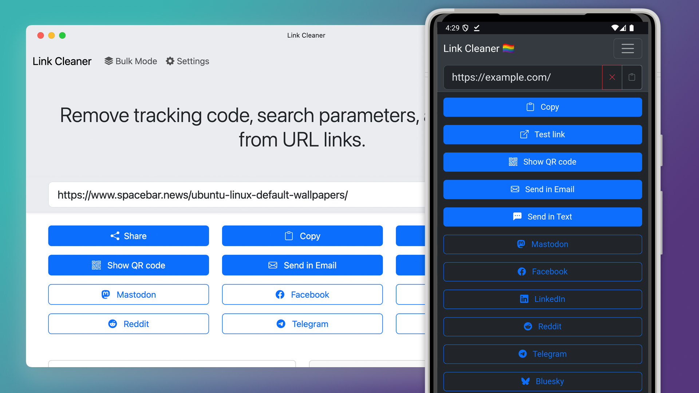
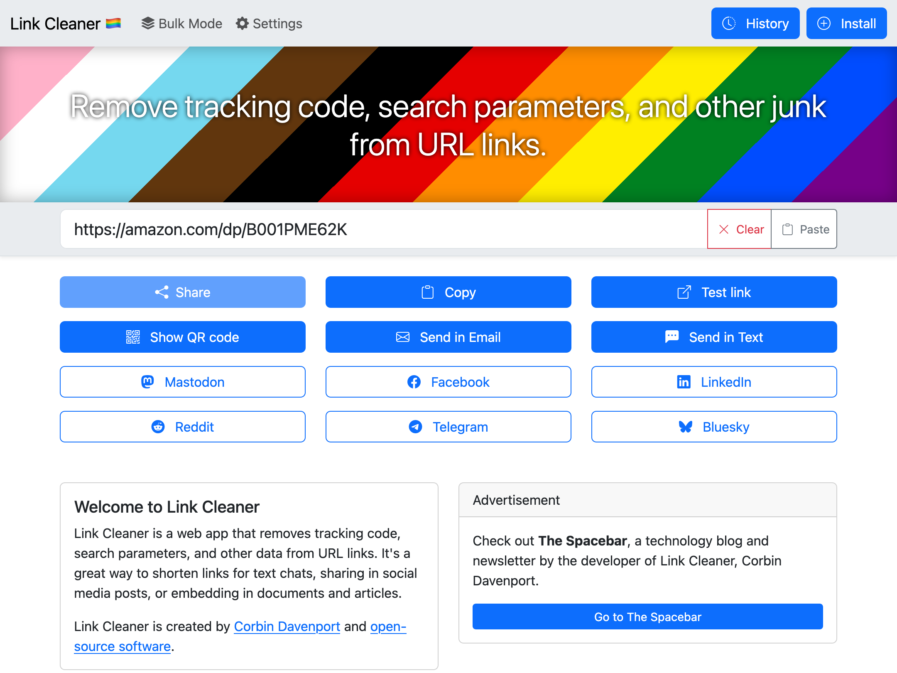
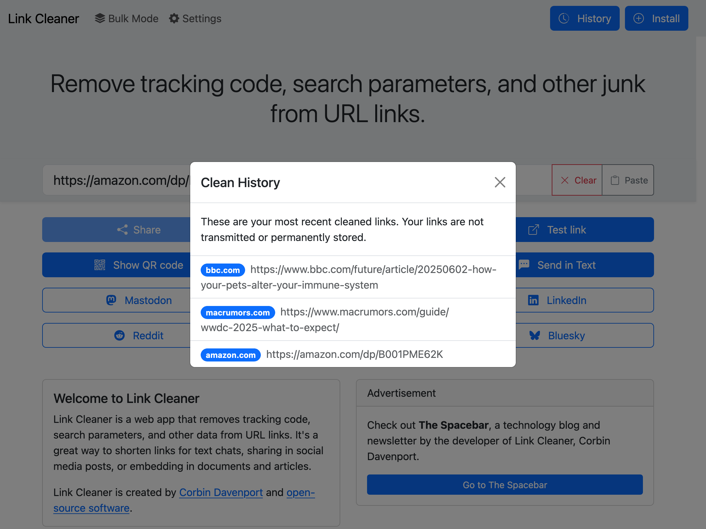
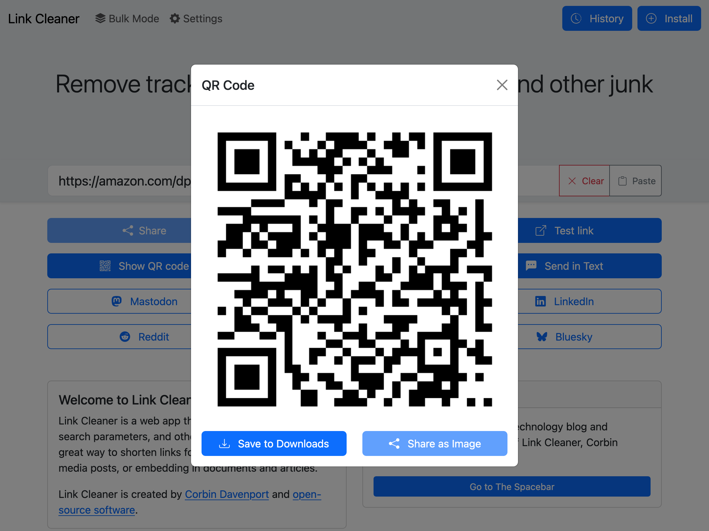

I released my Link Cleaner web app in 2021 as a way to quickly remove tracking parameters, search queries, and other extra fluff from web links. It was mostly intended for phones and tablets, since editing URLs with a touchscreen keyboard is especially awful, but it was also helpful on desktop browsers.
Link Cleaner is now my most popular software project, with over 44K users and 90K links cleaned just in 2025. I’ve wanted to give it a proper design overhaul, especially for larger screens, and the big update is now complete.
If you have used Link Cleaner, you know the interface was simple but (mostly) functional. The new version is not a massive change: it’s just a lot of usability improvements and a more refined design.
The home page still has the same basic layout, but the URL text box is closer to the center of the screen (more like the Google or DuckDuckGo home pages). There’s a new header that I can update with different backgrounds and text—right now it has a Pride Month theme.

The navigation bar has also been moved to the top of the screen, and more closely matches the design of the recent PhotoStack update. The navigation bar (and URL field, if you are on the main page) remain pinned to the top of the screen as you scroll down. The home page also has new explanations of Link Cleaner’s core features.
The Bulk Mode page has also been slightly updated, with text fields that now use most of your available screen space. There are many other small changes, like the tab icon (favicon) being more readable in dark browser themes, and improved accessibility on all popup panels.
The navigation bar’s History button opens the new Clean History panel, showing all the links you have cleaned recently. This is more secure and (hopefully) more useful than the previous History page, since your links are not actually saved in storage. They’re gone if you close the window or switch to another page.

The Install button opens the new Install panel, which can guide you through installing Link Cleaner as a web app, adding the Shortcut to your Apple devices, and using Link Cleaner in custom scripts and automations with the custom share URL. It also includes a new bookmarklet, which you can add to your browser’s bookmarks toolbar to instantly get a cleaned URL for the current page in a Link Cleaner popup window.
Link Cleaner now uses the same text field for the URL input and cleaned link output, removing the need to click the back button each time. You just paste in the text field again, or press Enter/Return on your keyboard, to clean the link again. There’s still a ‘Clear’ button for touchscreen devices, since selecting and removing all text is more difficult without a physical keyboard.
If you have a device with a physical keyboard, the merged text field means you can now paste a link with Ctrl+V/Cmd+V, then immediately press Ctrl+C/Cmd+V to copy the cleaned link. No reaching for the mouse or tabbing around required. This update removes the experimental option for automatic clipboard copy, since it was not reliable and difficult to test, and the new keyboard accessibility is a close enough replacement.

The share and copy buttons in Link Cleaner are mostly unchanged, but the QR code option now has a 'Save to Downloads’ button. If your browser supports sharing files, you can also quickly share the QR code to another installed application. The QR codes are still generated locally in your web browser, for better privacy and offline support.
Importantly, this update does not remove any functionality, except the experimental automatic clipboard copy that didn’t reliably work. If you have a script, bookmarklet, Apple Shortcut, or some other automation using Link Cleaner, it should still work exactly as it always did.
You can use Link Cleaner by visiting linkcleaner.app in your browser. The code is still open-source on GitHub.